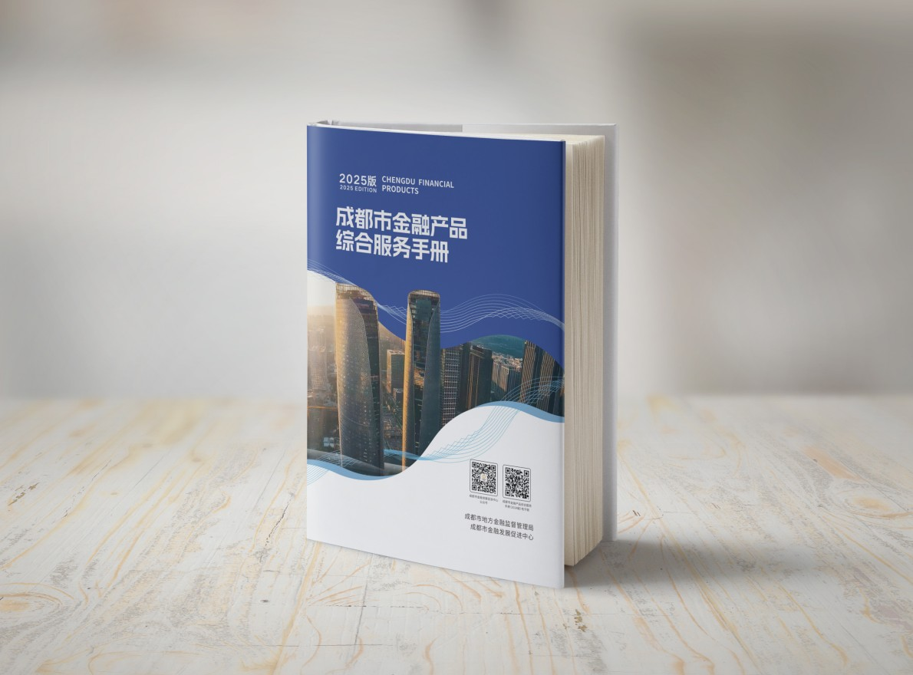

推动政金合作、促进产融对接、实现信息共享、开展研究咨询、培育金融人才、建设金融宣传阵地。
搭建政府与金融机构直接沟通平台，持续深化政金交流合作机制。
组织项目洽谈、项目路演、园区行等活动，推动金融与重点产业深度融合。
开展政策发布、宣讲解读与会员答疑，提升行业政策获得效率。
围绕现代金融产业生态圈开展课题、报告、行业指数及咨询服务。
联合高校和行业专家开展人才培养、高端金融业务培训与就业服务。
构建专业金融发声渠道和宣传推广平台，提升成都金融生态传播声量。

围绕人工智能、绿色金融、气候投融资、科技成果转化等方向提供产业发展智力支撑。